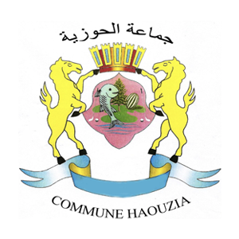

الجماعة الترابية الحوزية
Géoportail de la Commune de Haouzia
Zoom sur Haouzia
Options de couche
Zone Touristique
Centre Urbain
Autoroute
Zone Agricole
Afficher les échangeurs vers Haouzia
Pôle Urbain de Mazagan
Etablissement d'enseignement
Patrimoine Culturel